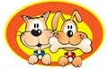

 Mascotas
G A T O S
También conocido como gato Angora turco, no solo es el gato nacional de Turquía -su nombre, de hecho, corresponde a la antigua denominación de Ankara, capital del país-; también es una de las razas de gato más solicitadas. Esto se debe a que las características del gato Angora y la enorme variedad de colores que presentan -desde el típico gato Angora blanco hasta el gato Angora gris– convierten al gato de Angora en uno de los mininos más admirados. La característica física más notable de los gatos de Angora turcos es, sin lugar a dudas, su hermoso pelaje. El gato de Angora también es muy esbelto y alargado, aunque su complexión fuerte le hace tener una musculatura elástica y desarrollada. Es una de las razas más fieles, enérgicas y juguetonas que existen. De naturaleza fiel y afectuosa, a la raza de gato Angora le encanta pasar tiempo con su dueño... siempre y cuando no le agarren demasiado tiempo en brazos. Es preciso que lo cepillemos regularmente para mantenerlo en perfectas condiciones. Son genéticamente propensos a sufrir algunas enfermedades tales como la rótula luxada, la sordera genética, la ataxia y la cardiomiopatía hipertrófica felina, una enfermedad genética del corazón.
Siamés
El gato siamés es una raza de gato. Dentro de dicha raza se distinguen dos variedades: por un lado el siamés moderno o siamés propiamente dicho, y por otro el siamés tradicional o Thai. El siamés moderno es una raza de gato proveniente del antiguo reino de Siam, actualmente Tailandia. En 1880 fueron llevados a Inglaterra y en 1890 a Estados Unidos. Este tipo de siamés, desde 1950, fue ganando protagonismo y resultó ser el elegido por los criadores y jueces de exposiciones felinas. Tal vez sea por esto que se acuñó el nombre "siamés" para el siamés moderno, ya que es la variedad que durante todas estas décadas ha participado a nivel de competición. El estándar del siamés moderno o siamés estilizado indica un cuerpo elegante, esbelto, estilizado, flexible y bien musculoso, con un esquema de color denominado pointed y en otros casos, colourpoint. Su cabeza es de forma triangular, el hocico fino, los ojos son almendrados y oblicuos, las orejas son grandes, el cuello delgado y largo, del mismo modo que su cuerpo y su cola. Su pelo es corto, brillante, fino, suave, apretado y adherido al cuerpo. El siamés se caracteriza por su esquema de color pointed típico, es decir, por una coloración más oscura en los puntos donde la temperatura corporal es menor (extremidades, cola, cara y orejas), que constrasta con el resto del cuerpo. Los orígenes del gato siamés son imprecisos, aunque hay antecedentes que en Siam (ahora Tailandia), estos animales convivieron con el rey y su familia, siendo ejemplares exclusivos de la realeza. Este privilegio se debe a que le concedían un carácter puro, ya que al nacer esta especie es de color blanco color sagrado en Siam. El siamés tradicional o Thai, por su parte, es una variedad dentro de la misma raza siamés proveniente de Tailandia y equivalente al siamés antiguo o siamés ancestral, que dio origen a través de planes genéticos al siamés moderno. Si bien comparte algunas características con el siamés moderno (por ejemplo, el patrón de coloración o acromelanismo) se diferencia de éste por sus formas redondeadas. Así, el thai presenta un cuerpo más compacto y redondo, cabeza con mejillas llenas y redondeadas, hocico más corto, orejas de inserción alta pero no enormes, ojos alargados (no totalmente oblicuos) celestes o azules, cola más corta a mediana y generalmente con punta más redondeada y más gruesa. Los colores aceptados son los mismos que para el siamés moderno. Uno de los gatos que se cree originario de Tailandia es el Si-Sawat, o Korat. Es un gato de color plateado, con ojos verdes; actualmente muchos creen que el Blue Point actual proviene de este antecesor. Actualmente, organizaciones internacionales felinas tales como TICA (The International Cat Association), WCF (World Cat Federation) y la Asociación Cubana de Aficionados a los Gatos (ACAG) reconocen al siamés tradicional como una nueva raza denominada thai y, en consecuencia, con un estándar propio y diferente al del siamés moderno. Los gatos siameses son apreciados por su belleza, personalidad y encanto, unidos a su natural distinción,que hacen que sus exhibiciones constituyan todo un espectáculo. Un animal de tales características exige un comportamiento acorde a la hora de adoptar uno.
Persa
El Persa es una raza de gato caracterizada por tener una cara ancha y plana y un gran abundante pelaje de variados colores. Son considerados comúnmente como gatos aristocráticos (el 75% de los gatos de pedigree registrados son persas). Los primeros gatos persas fueron introducidos en Italia desde Persia (actual Irán) en la década de 1620 y a sus descendientes se les llamó de muchas maneras. La rama persa actual se desarrolló a finales de 1800 en Inglaterra y proviene del gato de Angora turco. En general, no está claro cuándo aparecieron por primera vez los gatos de pelo largo, ya que no hay gatos salvajes africanos, que se cree que son los ancestros de los gatos domésticos, con el pelo largo. La aristocracia del siglo XIX pedía gatos de pelo largo, y el gen responsable del pelo largo se introdujo a través de la hibridación con el gato de Pallas.1 Los primeros antepasados documentados de los persas fueron importados de Jorasán, Persia, en Italia en 1620 por Pietro della Valle, y del gato de Angora (hoy Ankara), por parte de Turquía en Francia, por Nicholas Claude Fabri de Peiresc en la misma época. Los gatos de Jorasán estaban cubiertos de gris, mientras que los de angora eran blancos. De Francia pronto llegó a Gran Bretaña. También se importaron a Europa gatos de pelo largo provenientes de Afganistán, Birmania, China y Rusia. El cruce de los diferentes tipos eran comunes, especialmente entre los gatos de angora y los persas. Se caracteriza por ser de un tamaño mediano a grande. Tiene la cabeza redonda, maciza y el cráneo ancho. El frente es redondeado y los pómulos son fuertes y prominentes. Tiene el hocico corto y el mentón fuerte y lleno. Los ojos son grandes, redondos, bien abiertos y entre más separados mejor, de un color muy intenso y brillante. La posición de la nariz debe estar asimétrica pero muy importante que se encuentre a la altura de los ojos y profundidad "nariz(chata)" para un gato 100% puro. Las orejas del gato persa son pequeñas y redondeadas, estas deben estar en posición "V" asimétricas en la cabeza. En las puntas cubiertas de pelo que nace de dentro hacia afuera y así pasan desapercibidas y muy estéticas, confundidas con el pelo largo del lomo, patas y la cabeza. El cuerpo del gato persa es musculoso y redondeado y tiene una estructura ósea robusta. El mejor tipo de cuerpo en esta raza es compacta y se le conoce como "cuerpo Corby" Destaca por encima de las patas que son pequeñas y gruesas. Tiene el pelo abundante, espeso, largo y de tacto sedoso. La cola es peluda y redondeada en el extremo. La cola no debe pasar en distancia por adelante de la mitad de su cuerpo (cola corta) Así, podemos decir que los gatos persas no destacan por ser esbeltos sino más bien macizos, redondeados y robustos. El gato persa puede ser de colores muy variados. Hay gatos persas de un solo color igualado (sólidos), intenso y sin tonos más claros, como el negro, el blanco, el azul, el chocolate, el lila, el rojo y el crema. También pueden ser de colores variados(bicolores o con modalidades diferentes entre de franjas y colores llamados Tabby, los machos solo pueden poseer dos colores, mientras que las hembras hasta tres por ejemplo (Calico = rojo, negro, blanco), existen los persas himalayos, que los distingue su color azul con tintes oscsuros que remarcan en sus orejas, cola, las puntas de sus patas y sus rostros, a esto se le llama (punto) por ejemplo = punto flama. Los actuales gatos persas son de cuerpo compacto (corby). Tienen un hocico respingón en una gran cabeza redonda. Su abundante y exuberante pelaje es su principal característica, tienden a mudar en temporadas y para mantener la calidad del pelaje es sumamente importante cepillarlos cada tercer día como recomendación. Estos gatos son familiares, les encanta estar con los niños. Es un gato faldero. Los baños regulares son también adecuados y existen técnicas especiales para eliminar el exceso de grasa en el pelo así como la limpieza correcta de oídos y rostro. (consultar especialista (criaderos). Existen también los persas himalayos, éstos difieren de los persas en el pelaje. Un gato persa himalayo tiene todas las características de un persa pero su pelaje es similar en color a los siameses. Un himalayo presenta las mismas variantes de color que los siameses, pudiendo denominarse en función del color de las partes distales (azul, chocolate rojo, lila, etc.). Los distingue con tintes oscsuros que remarcan en sus orejas, cola, las puntas de sus patas y sus rostros, a esto se le llama (punto) por ejemplo = punto flama. Los gatos himalayos tienen los ojos azules, el punto de color o colorpoint debe estar en sus orejas, patas, lomo y cola y el resto del pelaje debe ser blanco o crema. Los puntos de color más comunes son: chocolate, lila, crema, flama, concha de tortuga carey, lince, azul. Los gatos persas son de carácter tranquilo, se les dice tigres del sofá porque les gusta dormir y descansar. Esta raza de gatos exige mucho cuidado y dedicación por parte de los dueños. Su crianza es difícil, el periodo de gestación es de aproximadamente 64 días y la camada es de pocas crías, por lo general dos o tres. Los gatitos suelen separarse alrededor de los tres meses de la madre. Es presumido por naturaleza, se trata de la raza de gatos con el carácter más tranquilo, sosegado y cariñoso, de naturaleza afable, congenia tanto con los humanos como con otros animales. Tiene un temperamento excepcionalmente apacible y doméstico que nunca ha conocido los instintos salvajes típicos de sus parientes felinos. Es tranquilo y se pasa la mayor parte del día durmiendo. Le gusta hacer ostentación de su belleza.
Siberiano
Se supone que esta raza se formó gracias al cruce del gato europeo con gatos salvajes autóctonos. Comenzó al popularizarse tras la caída del comunismo en la Unión Soviética, ya que no estaba permitido durante esta época la posesión de animales domésticos como mascotas, debido a la escasez de alimentos que sufría la población. A pesar de la prohibición, algunos granjeros los mantenían ocultos en las granjas, en estado semisalvaje, y se aprovechaban de las grandes dotes de cazador del siberiano para colaborar en el exterminio de roedores. A partir de la caída del Muro de Berlín, comienza su difusión por Alemania, y posteriormente por Inglaterra. Desde ese momento empieza a ocupar un lugar destacado debido a su espectacular belleza y la gran facilidad que presenta esta raza para la domesticación. De animal prohibido pasa a ser un símbolo nacional de Rusia, siendo en 1987 cuando se reconoce el primer pedigrí. En Alemania se reconoce en 1989, y en Estados Unidos en el año 1990. Le seguirían otros países europeos en 1992, como Francia y España. La apariencia general del gato del bosque siberiano es la de un felino de tamaño mediano-grande, su cuerpo es fuerte y con músculos potentes, con espalda larga y ligeramente curvada cuando está en reposo, pero en movimiento adquiere un aspecto totalmente horizontal, su cuello es corto y fuerte y soporta la cabeza con gran majestuosidad . Sus extremidades son proporcionales al tamaño de su cuerpo y terminan en pies grandes y con forma redondeada. Posee una cola proporcionada con el tamaño del cuerpo y cubierta de abundante pelaje. Todo su cuerpo está cubierto de un manto muy abundante y esponjoso que le confiere un aspecto majestuoso y realmente bello. Su vida suele durar entre 10 a 16 años, y pueden ser monocolores o bicolores. Los monocolores son en colores sólidos como el negro azulado o el rojo crema. Los bicolores son los que tienen cualquier mezcla de color sólido con el blanco. En este grupo, pueden ir en las manchas colores sólidos o cualquier otro dibujo o patrón. Entre éstos encontramos blanco y negro, azul y blanco, rojo y blanco, crema y blanco. La expresión facial es de dulzura debido a los contornos redondeados de su cabeza, siendo estas curvas las que mejor definen y diferencian el siberiano de otras razas de gatos del bosque. Se trata de una raza dotada de una salud de hierro, resistente y realmente dura. No tiene enfermedades asociadas, y por lo tanto no suele presentar problemas específicos. Sus cuidados se reducen al cepillado regular de su manto de pelo, insistiendo en las partes donde abunda el pelo lanoso, como el vientre y la pechera, eliminando de esta manera todo el pelo muerto y evitando la ingesta por lamidos y su posterior compactación en el intestino, dando lugar a la formación de bolas de pelo. No debemos bañar a los ejemplares de esta raza para no eliminar su particular capa grasa que le proporciona impermeabilización, de esta manera evitaremos que puedan perder protección en climas fríos, lo que les podría acarrear problemas respiratorios. Cuando salga al exterior es necesario tener precaución con los parásitos internos y externos. Debemos seguir en todo momento las pautas que marque su veterinario, y de esta manera le protegeremos a él y también a nosotros. El gato de raza siberiana tiene tres características que le hacen destacar entre otras razas: su belleza, su tamaño y, sobre todo, su carácter excepcional. A pesar de su aspecto muy próximo al de un felino salvaje, esta raza es de muy fácil mantenimiento debido a su docilidad y amabilidad, siendo muy adecuado como animal de compañía. Tiene un carácter dulce, cariñoso y disfruta enormemente de la compañía de los seres humanos, demostrando siempre una gran lealtad y fidelidad hacia sus propietarios. Es muy activo y juguetón, y también muy curioso por naturaleza, por lo que pasa muchos momentos observando su entorno y tomando nota de todo lo que sucede a su alrededor. Es un gran escalador, por lo que no será extraño encontrarlo encaramado en algún lugar alto del hogar vigilando todo lo que pasa en su pequeño mundo. Algunos ejemplares pueden demostrar cierta timidez, pero con una socialización adecuada pueden ser unos excelentes compañeros de vida de otras mascotas, incluidos los perros.
Maine Coon
Una popular historia dice que Maria Antonieta, reina de Francia, al intentar escapar de Francia y sus problemas, se embarca hacia Estados Unidos con seis de sus gatos angora de Turquía con la ayuda del capitán Samuel Clough. María Antonieta no logró llegar a Estados Unidos, pero sus gatos sí. Los gatos arribaron a Wiscasset, Maine. Una historia sobre el origen de su nombre habla acerca de un grumete llamado Tom Coon que coleccionaba gatos para traer suerte a la nave en la que viajaba. También se dice que coon es un híbrido de gato y mapache en inglés, cat y racoon, pero es biológicamente imposible. Otra versión sugiere que cuando los vikingos llegaron a América portaban gatos en sus barcos por superstición y para que les cazaran las ratas. Esos gatos peludos, antepasados comunes de los bosques de Noruega, se mezclaron con los gatos monteses. A pesar de las muchas leyendas que sitúan el origen del Maine Coon a partir de los angoras turcos que vivían en Europa, debemos afirmar que son muchas las diferencias entre estas dos razas; empezando por el tamaño. El Maine Coon es una de las razas de felinos domésticos más grandes y de mayor peso.
Sphynx
El Sphynx o gato esfinge es una raza de gato cuya característica más llamativa es la aparente ausencia de pelaje y su aspecto delgado y esbelto. Aunque los ejemplares de la raza parecen ser gatos sin pelos, hay que destacar que verdaderamente no son gatos pelados, sino que presentan la piel cubierta de una capa de vello muy fino, corto y parejo, casi imperceptible a la vista o al tacto. El gato Sphynx fue la primera raza sin pelo o sin pelaje aparente reconocida por la asociaciones felinas que llevan un registro genealógico de los felinos de raza; actualmente son tres las razas de gatos pelados o que parecen ser reconocidas o en alguna etapa de serlo. Hoy en día el Sphynx comparte junto con el Peterbald y con el Don Sphynx la exclusividad de ser una de las tres únicas razas peladas o sin pelos. El gen responsable de la modificación en el pelaje del Sphynx es recesivo y tiene dominancia incompleta sobre su alelo, si es que está presente el gen que produce el Devon rex (ambos son recesivos al tipo salvaje), mientras que las otras dos nuevas razas de Rusia: el Peterbald y el Don Sphynx, tienen sus propias mutaciones independientes y de tipo dominante. Los gatos aparentemente calvos o sin pelaje, lampiños o sin pelos, han aparecido de modo natural a lo largo de la historia y seguramente seguirán apareciendo en el futuro. Las modificaciones en el pelaje son generalmente producto de las mutaciones. Esta apariencia característica es el resultado de una mutación genética natural de carácter recesivo, acontecida en Canadá, en la década de los 60 así como el trabajo de criadores serios que decidieron fijar y mantener dichas características confiriéndole al mismo tiempo un tipo y estructura único y particular como para conformar una raza. Los criadores en Canadá trabajaron con esta raza desde principio de los años 60. Todas las líneas de sangre de Sphynx, tanto las americanas como las europeas de la actualidad descienden a partir de dos familias de mutaciones naturales: Dermis y Epidermis (1975) del Pearsons de Wadena, Minesota, USA. Bambi, Punkie, y Paloma (1978) encontrado en Toronto, Ontario, Canadá y criado por Shirley Smith. El origen es poco conocido, pero la semejanza morfológica hace pensar a ciertos criadores que es el resultado de una mutación aparecida en el devon rex. En algún punto las dos razas son similares, y fueron durante muchos años uno de los cruces permitidos para ampliar el pool genético y el vigor dentro del Sphynxe durante los 80 principalmente en Estados Unidos. Los ejemplares producto de estos cruces inter-raciales se denominan variantes. Dichos cruces se han vuelto impopulares e incluso no están permitidos por algunas asociaciones debido a que en los últimos años, han conducido desafortunadamente a la fijación de ciertas características no buscadas así como serios problemas dentales, del sistema nervioso y del sistema cardíaco. Actualmente, ha aparecido una cuarta raza de gatos sin pelo, el Kohana o gato calvo hawaiano, de tacto ceroso y completamente calvo.
Scottish Fold
El Fold escocés es una raza de gato originaria de Escocia, Reino Unido, de una estructura ósea mediana y una gran musculatura. Posee pies redondos y una cola gruesa de tamaño medio. Su cabeza es muy redondeada, con las pequeñas orejas plegadas. La nariz es chata y corta y posee unos pómulos salientes. Su pelaje es corto, aunque existe una versión llamada Highland Fold que lo tiene semilargo. No tienen un color específico, y poseen un carácter fuerte y un gran instinto cazador. Fue reconocida como tal en 1974. Aunque se ha hablado de gatos chinos de orejas caídas, no se puede decir con certeza que este felino sea un antepasado del Scottish Fold. Otros gatos de orejas caídas nacieron en Escocia en 1961 y fueron seleccionados para crear la raza. El primero en aparecer fue una hembra sueca llamada Susie, una gata blanca nacida en 1961. Fue recogida de la calle por un matrimonio, quienes algunos meses más tarde decidieron cruzarla con un British Shorthair, y en 1966 decidieron registrar a sus crías como Folds. Su principal característica son sus orejas, las que según los estudios realizados bastaba con que uno de los progenitores posea el gen para poder heredarlas. Posee una cabeza ancha y redonda, pero lo que la diferencia de los demás son sus orejas pequeñas y plegadas hacia delante y abajo, unos ojos redondos separados por una nariz ancha. No tienen un color específico, y su cuello es fuerte y estrecho. Su musculatura es generalmente robusta, con una forma compacta, aunque suelen pesar muy poco. Sus extremidades son de un largo normal, aunque se han dado muchos casos de colas muy cortas y gruesas con la punta redonda. Estas anomalías provocaron su prohibición en las exposiciones británicas durante un tiempo, hasta que grupos interesados se dedicaron a la cría para intentar que todas saliesen bien. Su pelo es muy corto, elástico y muy suave. Este animal es muy amistoso, dulce y compañero, confía plenamente en el ser humano y le es muy fácil adaptarse a nuevos entornos. Casi nunca presenta nerviosismo. En manada generalmente siguen a un "líder", que suele ser el padre, imitando todos sus movimientos. Cuando se cruzan con otras razas son generalmente pacíficos, aunque siempre atentos. Los partos suelen ser tranquilos. La pasividad de la hembra facilita las cosas. Los cachorros suelen nacer con las orejas hacia atrás. Apenas tres semanas después del nacimiento comienzan a desarrollar su característica más diferencial. Puede ocurrir que no logren desarrollarse del todo, inclusive hay casos en los que sólo una oreja consigue el objetivo. Para evitar estos problemas, los expertos aconsejan no darles demasiada leche cuando son bebés, porque esto provocaría que la fuerza natural del desarrollo no pueda competir contra la firmeza del cartílago. Poco tiempo después de que se decidió en 1974 darle el carácter de raza a este felino, se introdujo como ley la prohibición del cruce de estos animales entre sí, al producirse numerosos casos con anomalías óseas graves. Se recomienda que el emparejamiento sea con otras razas como el Scottish straight (descendiente de un Fold) o con una raza similar llamada British Shorthair.
Himalayo
Un gato himalayo es simplemente un gato persa con un color de pelo y ojos concreto. Es decir, el gato himalayo es una variedad especial de gato persa. Esto es así en Europa, porque en una asociación felina de Estados Unidos, se considera al gato Himalayo una raza a parte, y diferenciada de la raza persa. Mira cuantos criterios diferentes hay sobre sí el himalayo es una raza o no: En Europa y en la CFA americana se dice “el gato himalayo es una variedad de persa” Mientras que en la asociación ICA de Estados Unidos se dice “el gato himalayo es una variedad de siamés”. finalmente en la asociación ACFA americana se dice “hay dos razas diferentes, el gato persa y el gato himalayo“. En definitiva el gato himalayo es un híbrido entre siamés y persa. Lo podían haber llamado “persa-més” o cualquier otra cosa, pero así se ha quedado el tema. ¿De donde surgen los gatos Himalayos? Pues “érase una vez en la cordillera del Himalaya…” – Jaja, no!, sería romántico como idea, pero no es cierta. El gato himalayo nace como gato mestizo entre dos razas preexistentes, el gato persa y el gato siames (puedes consultar en esos links ambas razas). Con esos padres tan bellos, normal que el hijo resultante lo fuera también. Los primeros cruces registrados con el propósito claro de tener un gato de pelo largo con coloración de siames se dan en los años 30 en la Universidad de Harvard, Estados Unidos. En Harvard los bautizan como “persa-siamés”. No obstante, ninguna asociación felina potente los reconoce como raza. Pero la idea es retomada por un criador inglés llamado Brian Stering-Webb en los años 50. Él tiene un programa de cría y además si que tiene éxito en el reconocimiento de sus gatitos himalayos. En 1955 en Inglaterra se aceptan oficialmente estos gatos por primera vez, aunque no se llaman aún himalayos sino “longhaired colorpoint” (patrón siamés de pelo largo). En Estados Unidos se reconocen unos años más tarde por primera vez, hacia 1957. Lo que ocurrió en los años posteriores (hasta los 80) fue un pequeña “guerra” por llamarlo de alguna manera, por ver si debían predominar los genes de siames (gatos más estilizados con caritas de muñeca) o los genes persa (gatos más compactos y achatados). En general, la visión predominante hoy es que dominen los genes persa, y por eso casi todas las asociaciones felinas internacionales (excepto una) consideran al gato himalayo una variante del gato persa, como hemos explicado antes.